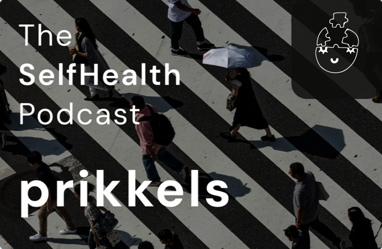

In deze aflevering leggen wij uit wat prikkels zijn en hoe ze ons dagelijks leven beïnvloeden. We bespreken de verschillende soorten prikkels, zoals geluid, licht en sociale situaties, en hoe deze onze emoties en reacties kunnen beïnvloeden.
Luister op spotify!